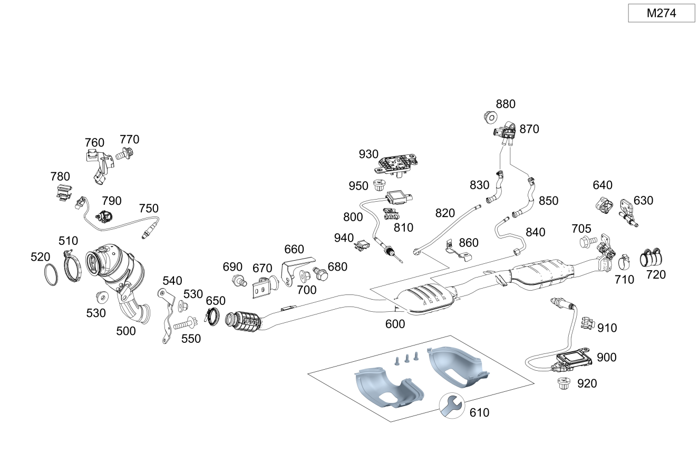

| № | Артикул | Название | Кол. | Примечание |
|---|---|---|---|---|
| 10 | A 274 140 09 08 | Трубка выпуска ОГ (EXHAUST GAS LINE) | 1 | Спереди |
| 70 | A 000 995 14 33 | Проф. хомут сист. вып. ОГ (PROFILE CLAMP, EXH. SYS.) | 1 | Катализатор к выпускной трубе спереди |
| 80 | A 213 491 03 01 | Держатель (HOLDER) | 1 | К лонжерону |
| 90 | A 213 490 35 02 | Держатель (HOLDER) | 1 | К трубопроводу ОГ |
| 100 | N 910105 008008 | Винт с 6-гранной головкой (HEXAGON HEAD BOLT) | 3 | Держатель к продольному несущему элементу; M8X16 |
| 110 | N 910105 008008 | Винт с 6-гранной головкой (HEXAGON HEAD BOLT) | 2 | Держатель к продольному несущему элементу; M8X16 |
| 120 | N 000000 003175 | Гайка (NUT) | 1 | Держатель к держателю; M8 |
| 130 | A 000 995 30 33 | Проф. хомут сист. вып. ОГ (PROFILE CLAMP, EXH. SYS.) | 1 | Выпускная труба к выпускной трубе сзади |
| 140 | A 000 995 48 02 | Трубный хомут (PIPE CLAMP) | 1 | Выпускная труба к выпускной трубе сзади; Ø 70 MM |
| 150 | A 205 490 86 03 | Трубопровод ОГ пер. (EXHAUST GAS LINE, FRONT) | 1 | Спереди |
| 165 | A 205 540 00 94 | Электрический жгут (ELECTRICAL WIRING HARNESS) | 1 | Датчик температуры сажевого фильтра бензинового двигателя B19/12\-X101/4 |
| 180 | A 205 492 03 00 | Держатель (HOLDER) | 1 | На заднем мосту (левая сторона), без подвеса |
| 180 | A 205 490 30 40 | Держатель (HOLDER) | 1 | На заднем мосту (левая сторона) |
| 190 | A 231 492 00 44 | Подвес трубопровода ОГ (SUSPENSION, EXH. GAS LINE) | 2 | Трубопровод ОГ |
| 300 | A 205 490 45 03 | Напорный трубопровод (PRESSURE LINE) | 1 | К сажевому фильтру (передняя сторона) |
| 300 | A 205 490 86 04 | Напорный трубопровод (PRESSURE LINE) | 1 | К сажевому фильтру (передняя сторона) |
| 300 | A 205 490 45 03 | Напорный трубопровод (PRESSURE LINE) | 1 | К сажевому фильтру (передняя сторона) |
| 300 | A 205 490 45 03 | Напорный трубопровод (PRESSURE LINE) | 1 | К сажевому фильтру (передняя сторона) |
| 310 | A 205 492 31 00 | Шланг выпускной системы (EXHAUST GAS HOSE) | 1 | Перед сажевым фильтром |
| 310 | A 205 492 31 00 | Шланг выпускной системы (EXHAUST GAS HOSE) | 1 | Перед сажевым фильтром |
| 320 | A 205 490 87 04 | Напорный трубопровод (PRESSURE LINE) | 1 | К сажевому фильтру (задняя сторона) |
| 320 | A 205 490 46 03 | Напорный трубопровод (PRESSURE LINE) | 1 | К сажевому фильтру (задняя сторона) |
| 330 | A 205 492 32 00 | Шланг выпускной системы (EXHAUST GAS HOSE) | 1 | После сажевого фильтра |
| 330 | A 205 492 32 00 | Шланг выпускной системы (EXHAUST GAS HOSE) | 1 | После сажевого фильтра |
| 340 | A 205 491 74 00 | Держатель (HOLDER) | 1 | Напорный трубопровод |
| 340 | A 205 491 62 00 | Держатель (HOLDER) | 1 | Напорный трубопровод |
| 340 | A 205 491 62 00 | Держатель (HOLDER) | 1 | Напорный трубопровод |
| 350 | N 000000 001181 | Винт с 6-гр. глвк (HEXALOBULAR SCREW) | 2 | Крепление пластины; M5X16 |
| 350 | N 000000 001181 | Винт с 6-гр. глвк (HEXALOBULAR SCREW) | 2 | Крепление пластины; M5X16 |
| 350 | N 000000 001181 | Винт с 6-гр. глвк (HEXALOBULAR SCREW) | 2 | Крепление пластины; M5X16 |
| 360 | A 213 491 54 01 | Держатель (HOLDER) | 1 | Дифференциальный датчик давления |
| 360 | A 205 490 00 04 | Держатель (HOLDER) | 1 | Дифференциальный датчик давления |
| 370 | A 211 491 00 23 | Язычок (TAB) | 1 | Крепление напорного трубопровода |
| 370 | A 211 491 00 23 | Язычок (TAB) | 1 | Крепление напорного трубопровода |
| 370 | A 211 491 00 23 | Язычок (TAB) | 1 | Крепление напорного трубопровода |
| 370 | A 211 491 00 23 | Язычок (TAB) | 1 | Крепление напорного трубопровода |
| 380 | A 205 490 99 03 | Держатель (HOLDER) | 1 | Экран к держателю |
| 380 | A 205 490 99 03 | Держатель (HOLDER) | 1 | Экран к держателю |
| 380 | A 205 490 99 03 | Держатель (HOLDER) | 1 | Экран к держателю |
| 380 | A 205 490 99 03 | Держатель (HOLDER) | 1 | Экран к держателю |
| 390 | N 910143 006000 | Винт с 6-гр. глвк (HEXALOBULAR SCREW) | 2 | Экран к держателю; M6X12 |
| 390 | N 910143 006000 | Винт с 6-гр. глвк (HEXALOBULAR SCREW) | 2 | Крепление держателя; M6X12 |
| 400 | A 205 491 56 00 | Держатель (HOLDER) | 1 | Усилитель |
| 400 | A 205 491 56 00 | Держатель (HOLDER) | 1 | Усилитель |
| 400 | A 205 491 56 00 | Держатель (HOLDER) | 1 | Усилитель |
| 410 | N 000000 003477 | Гайка (NUT) | 2 | Держатель к экрану; M6 |
| 420 | A 205 491 57 00 | Фиксатор от провор. (ANTI-TWIST LOCK) | 1 | Напорный трубопровод к держателю |
| 420 | A 205 491 57 00 | Фиксатор от провор. (ANTI-TWIST LOCK) | 1 | Напорный трубопровод к держателю |
| 420 | A 205 491 73 00 | Фиксатор от провор. | 1 | Напорный трубопровод к держателю |
| 430 | N 000000 003477 | Гайка (NUT) | 1 | Напорные трубопроводы к кронштейну; M6 |
| 440 | A 000 905 78 09 | Датчик давления (PRESSURE SENSOR) | 1 | Перепад давления в сажевом фильтре бензинового двигателя |
| 445 | N 000000 003477 | Гайка (NUT) | 1 | Напорный трубопровод к держателю; M6 |
| 445 | N 000000 003477 | Гайка (NUT) | 1 | Напорный трубопровод к держателю; M6 |
| 450 | A 000 905 44 09 | Датчик температуры (TEMPERATURE SENSOR) | 1 | К сажевому фильтру (передняя сторона) |
| 450 | A 000 905 99 11 | Датчик температуры (TEMPERATURE SENSOR) | 1 | К сажевому фильтру (передняя сторона) |
| 450 | A 000 905 99 11 | Датчик температуры (TEMPERATURE SENSOR) | 1 | К сажевому фильтру (передняя сторона) |
| 460 | A 000 541 01 40 | Держатель (HOLDER) | 1 | Датчик температуры; 18 X 24 MM |
| 470 | A 177 159 21 00 | Держатель (HOLDER) | 1 | Температурный датчик |
| 480 | A 000 990 36 62 | Пластмассовая гайка (PLASTIC NUT) | 2 | Держатель датчика температуры |
| 500 | A 274 140 12 08 | Трубка выпуска ОГ (EXHAUST GAS LINE) | 1 | Спереди |
| 500 | A 274 140 11 08 | Трубка выпуска ОГ (EXHAUST GAS LINE) | 1 | Спереди |
| 500 | A 274 140 08 00 | Трубка выпуска ОГ (EXHAUST GAS LINE) | 1 | Спереди |
| 500 | A 274 140 18 08 | Трубка выпуска ОГ (EXHAUST GAS LINE) | 1 | Спереди |
| 500 | A 274 140 02 08 | Трубка выпуска ОГ (EXHAUST GAS LINE) | 1 | Спереди |
| 500 | A 274 140 18 08 | Трубка выпуска ОГ (EXHAUST GAS LINE) | 1 | Спереди |
| 510 | A 000 995 36 33 | Проф. хомут сист. вып. ОГ (PROFILE CLAMP, EXH. SYS.) | 1 | Выпускная труба к выпускному коллектору |
| 520 | A 274 142 00 80 | Полуметал. уплотнение (METAL-SOFT-MATERIAL SEAL) | 1 | Выпускная труба к выпускному коллектору |
| 530 | N 000000 004012 | ГАЙКА КОМБИНИРОВАННАЯ (NUT-AND-WASHER ASSEMBLY) | 1 | Держатель к масляному поддону |
| 530 | N 000000 004012 | ГАЙКА КОМБИНИРОВАННАЯ (NUT-AND-WASHER ASSEMBLY) | 1 | Держатель к масляному поддону |
| 530 | N 000000 004012 | ГАЙКА КОМБИНИРОВАННАЯ (NUT-AND-WASHER ASSEMBLY) | 1 | Держатель к масляному поддону |
| 600 | A 205 490 37 20 | Трубка выпуска ОГ (EXHAUST GAS LINE) | 1 | Спереди |
| 600 | A 205 490 36 20 | Трубка выпуска ОГ (EXHAUST GAS LINE) | 1 | Спереди |
| 600 | A 205 490 37 20 | Трубка выпуска ОГ (EXHAUST GAS LINE) | 1 | Спереди |
| 600 | A 205 490 36 20 | Трубка выпуска ОГ (EXHAUST GAS LINE) | 1 | Спереди |
| 600 | A 205 490 35 20 | Трубка выпуска ОГ (EXHAUST GAS LINE) | 1 | Спереди |
| 600 | A 205 490 35 20 | Трубка выпуска ОГ (EXHAUST GAS LINE) | 1 | Спереди |
| 600 | A 205 490 86 02 | Трубопровод ОГ пер. (EXHAUST GAS LINE, FRONT) | 1 | Спереди |
| 600 | A 205 490 35 20 | Трубка выпуска ОГ (EXHAUST GAS LINE) | 1 | Спереди |
| 600 | A 205 490 86 02 | Трубопровод ОГ пер. (EXHAUST GAS LINE, FRONT) | 1 | Спереди |
| 600 | A 205 490 39 20 | Трубка выпуска ОГ (EXHAUST GAS LINE) | 1 | Спереди |
| 600 | A 205 490 39 20 | Трубка выпуска ОГ (EXHAUST GAS LINE) | 1 | Спереди |
| 600 | A 205 490 90 02 | Трубопровод ОГ пер. (EXHAUST GAS LINE, FRONT) | 1 | Спереди |
| 600 | A 205 490 39 20 | Трубка выпуска ОГ (EXHAUST GAS LINE) | 1 | Спереди |
| 600 | A 205 490 90 02 | Трубопровод ОГ пер. (EXHAUST GAS LINE, FRONT) | 1 | Спереди |
| 600 | A 205 490 34 20 | Трубка выпуска ОГ (EXHAUST GAS LINE) | 1 | Спереди |
| 600 | A 205 490 36 20 | Трубка выпуска ОГ (EXHAUST GAS LINE) | 1 | Спереди |
| 600 | A 205 490 34 20 | Трубка выпуска ОГ (EXHAUST GAS LINE) | 1 | Спереди |
| 600 | A 205 490 38 20 | Трубка выпуска ОГ | 1 | Спереди |
| 600 | A 205 490 41 20 | Трубка выпуска ОГ (EXHAUST GAS LINE) | 1 | Спереди |
| 600 | A 205 490 38 20 | Трубка выпуска ОГ | 1 | Спереди |
| 600 | A 205 490 44 20 | Трубка выпуска ОГ (EXHAUST GAS LINE) | 1 | Спереди |
| 600 | A 205 490 40 20 | Трубка выпуска ОГ (EXHAUST GAS LINE) | 1 | Спереди |
| 600 | A 205 490 36 01 | Трубопровод ОГ пер. (EXHAUST GAS LINE, FRONT) | 1 | Спереди |
| 600 | A 205 490 37 20 | Трубка выпуска ОГ (EXHAUST GAS LINE) | 1 | Спереди |
| 600 | A 205 490 93 02 | Трубопровод ОГ пер. (EXHAUST GAS LINE, FRONT) | 1 | Спереди |
| 600 | A 205 490 37 20 | Трубка выпуска ОГ (EXHAUST GAS LINE) | 1 | Спереди |
| 600 | A 205 490 93 02 | Трубопровод ОГ пер. (EXHAUST GAS LINE, FRONT) | 1 | Спереди |
| 600 | A 205 490 58 03 | Трубопровод ОГ пер. (EXHAUST GAS LINE, FRONT) | 1 | Спереди |
| 600 | A 205 490 56 03 | Трубопровод ОГ пер. (EXHAUST GAS LINE, FRONT) | 1 | Спереди |
| 600 | A 205 490 60 20 | Трубка выпуска ОГ (EXHAUST GAS LINE) | 1 | Спереди |
| 600 | A 205 490 86 03 | Трубопровод ОГ пер. (EXHAUST GAS LINE, FRONT) | 1 | Спереди |
| 600 | A 205 490 95 02 | Трубопровод ОГ пер. (EXHAUST GAS LINE, FRONT) | 1 | Спереди |
| 600 | A 205 490 56 03 | Трубопровод ОГ пер. (EXHAUST GAS LINE, FRONT) | 1 | Спереди |
| 600 | A 205 490 02 04 | Трубопровод ОГ пер. (EXHAUST GAS LINE, FRONT) | 1 | Спереди |
| 610 | A 205 491 82 00 | Воронка (FUNNEL) | 1 | Ремонтное исполнение |
| 630 | A 205 490 29 40 | Держатель (HOLDER) | 1 | На заднем мосту (левая сторона), с подвесом |
| 630 | A 205 492 03 00 | Держатель (HOLDER) | 1 | На заднем мосту (левая сторона), без подвеса |
| 630 | A 205 490 30 40 | Держатель (HOLDER) | 1 | На заднем мосту (левая сторона) |
| 630 | A 205 490 30 40 | Держатель (HOLDER) | 1 | На заднем мосту (правая сторона) |
| 630 | A 205 492 03 00 | Держатель (HOLDER) | 1 | На заднем мосту (левая сторона) |
| 640 | A 231 492 00 44 | Подвес трубопровода ОГ (SUSPENSION, EXH. GAS LINE) | 2 | Сзади |
| 640 | A 231 492 00 44 | Подвес трубопровода ОГ (SUSPENSION, EXH. GAS LINE) | 2 | Сзади |
| 640 | A 231 492 00 44 | Подвес трубопровода ОГ (SUSPENSION, EXH. GAS LINE) | 2 | Сзади |
| 640 | A 231 492 00 44 | Подвес трубопровода ОГ (SUSPENSION, EXH. GAS LINE) | 2 | Сзади |
| 640 | A 231 492 00 44 | Подвес трубопровода ОГ (SUSPENSION, EXH. GAS LINE) | 2 | Сзади |
| 640 | A 231 492 00 44 | Подвес трубопровода ОГ (SUSPENSION, EXH. GAS LINE) | 2 | Сзади |
| 640 | A 231 492 00 44 | Подвес трубопровода ОГ (SUSPENSION, EXH. GAS LINE) | 2 | Сзади |
| 650 | A 000 995 14 33 | Проф. хомут сист. вып. ОГ (PROFILE CLAMP, EXH. SYS.) | 1 | Катализатор к выпускной трубе спереди |
| 660 | A 205 492 12 00 | Держатель (HOLDER) | 1 | К лонжерону |
| 660 | A 205 492 01 00 | Держатель (HOLDER) | 1 | К лонжерону |
| 660 | A 205 492 01 00 | Держатель (HOLDER) | 1 | К лонжерону |
| 660 | A 205 492 12 00 | Держатель (HOLDER) | 1 | К лонжерону |
| 660 | A 205 492 12 00 | Держатель (HOLDER) | 1 | К лонжерону |
| 670 | A 205 490 01 00 | Держатель (HOLDER) | 1 | К трубопроводу ОГ |
| 670 | A 205 490 01 00 | Держатель (HOLDER) | 1 | К трубопроводу ОГ |
| 690 | N 910105 008008 | Винт с 6-гранной головкой (HEXAGON HEAD BOLT) | 2 | Держатель к продольному несущему элементу; M8X16 |
| 700 | N 000000 008303 | Шестигранная гайка (HEXAGON NUT) | 1 | Держатель к держателю; M8 |
| 705 | N 000000 007953 | Винт с 6-гранной головкой (HEXAGON HEAD BOLT) | 2 | К заднему мосту; M8X25 |
| 710 | A 000 995 30 33 | Проф. хомут сист. вып. ОГ (PROFILE CLAMP, EXH. SYS.) | 1 | Выпускная труба к выпускной трубе сзади |
| 720 | A 000 995 48 02 | Трубный хомут (PIPE CLAMP) | 1 | Выпускная труба к выпускной трубе сзади; Ø 70 MM |
| 750 | A 007 542 64 18 | Лямбда-зонд (LAMBDA SENSOR) | 1 | Диагностический зонд после катализатора |
| 750 | A 000 542 31 00 | Лямбда-зонд (LAMBDA SENSOR) | 1 | Регулирующий зонд перед катализатором |
| 750 | A 000 542 31 00 | Лямбда-зонд (LAMBDA SENSOR) | 1 | Регулирующий зонд перед катализатором |
| 750 | A 000 542 07 00 | Лямбда-зонд (LAMBDA SENSOR) | 1 | Регулирующий зонд перед катализатором |
| 760 | A 205 547 00 00 | Держатель (HOLDER) | 1 | Кабель зонда к демпфирующему фильтру |
| 770 | N 910143 006000 | Винт с 6-гр. глвк (HEXALOBULAR SCREW) | 1 | Держатель к демпферному фильтру; M6X12 |
| 780 | A 271 159 28 40 | Держатель (HOLDER) | 1 | Провод зонда к жгуту проводов двигателя |
| 790 | A 004 995 60 77 | Крепеж (трубо)провода (LINE FASTENER) | 1 | Крепление провода зонда |
| 790 | A 004 995 60 77 | Крепеж (трубо)провода (LINE FASTENER) | 1 | Крепление провода зонда |
| 800 | A 000 905 44 09 | Датчик температуры (TEMPERATURE SENSOR) | 1 | К сажевому фильтру (передняя сторона) |
| 800 | A 000 905 99 11 | Датчик температуры (TEMPERATURE SENSOR) | 1 | К сажевому фильтру (передняя сторона) |
| 800 | A 000 905 44 09 | Датчик температуры (TEMPERATURE SENSOR) | 1 | К сажевому фильтру (передняя сторона) |
| 800 | A 000 905 97 05 | Датчик температуры (TEMPERATURE SENSOR) | 1 | К сажевому фильтру (передняя сторона) |
| 800 | A 000 905 87 05 | Датчик температуры (TEMPERATURE SENSOR) | 1 | К сажевому фильтру (передняя сторона) |
| 800 | A 000 905 76 05 | Датчик температуры (TEMPERATURE SENSOR) | 1 | К сажевому фильтру (передняя сторона) |
| 810 | A 000 546 20 75 | хомут (CLAMP) | 3 | Крепление планки датчика; 18.0X18.5 MM |
| 820 | A 205 490 45 03 | Напорный трубопровод (PRESSURE LINE) | 1 | К сажевому фильтру (передняя сторона) |
| 820 | A 205 490 86 04 | Напорный трубопровод (PRESSURE LINE) | 1 | К сажевому фильтру (передняя сторона) |
| 820 | A 205 490 45 03 | Напорный трубопровод (PRESSURE LINE) | 1 | К сажевому фильтру (передняя сторона) |
| 820 | A 205 490 45 03 | Напорный трубопровод (PRESSURE LINE) | 1 | К сажевому фильтру (передняя сторона) |
| 830 | A 205 492 31 00 | Шланг выпускной системы (EXHAUST GAS HOSE) | 1 | Перед сажевым фильтром |
| 830 | A 205 492 31 00 | Шланг выпускной системы (EXHAUST GAS HOSE) | 1 | Перед сажевым фильтром |
| 840 | A 205 490 87 04 | Напорный трубопровод (PRESSURE LINE) | 1 | К сажевому фильтру (задняя сторона) |
| 840 | A 205 490 46 03 | Напорный трубопровод (PRESSURE LINE) | 1 | К сажевому фильтру (задняя сторона) |
| 850 | A 205 492 32 00 | Шланг выпускной системы (EXHAUST GAS HOSE) | 1 | После сажевого фильтра |
| 850 | A 205 492 32 00 | Шланг выпускной системы (EXHAUST GAS HOSE) | 1 | После сажевого фильтра |
| 860 | A 205 491 74 00 | Держатель (HOLDER) | 1 | Напорный трубопровод |
| 860 | A 205 491 62 00 | Держатель (HOLDER) | 1 | Напорный трубопровод |
| 870 | A 000 905 78 09 | Датчик давления (PRESSURE SENSOR) | 1 | Перепад давления в сажевом фильтре бензинового двигателя |
| 880 | N 000000 003477 | Гайка (NUT) | 1 | Напорный трубопровод к держателю; M6 |
| 880 | N 000000 003477 | Гайка (NUT) | 1 | Напорный трубопровод к держателю; M6 |
| 900 | A 000 905 35 03 | Датчик NOx (NOX SENSOR) | 1 | Перед; 615mm |
| 900 | A 000 905 62 04 | Датчик NOx (NOX SENSOR) | 1 | Перед |
| 900 | A 000 905 23 10 | Датчик NOx (NOX SENSOR) | 1 | Перед |
| 900 | A 000 905 44 10 | Датчик NOx (NOX SENSOR) | 1 | Перед |
| 900 | A 000 905 02 19 | Датчик NOx (NOX SENSOR) | 1 | Перед |
| 910 | A 000 546 20 75 | хомут (CLAMP) | 2 | К экрану; 18.0X18.5 MM |
| 920 | A 000 990 36 62 | Пластмассовая гайка (PLASTIC NUT) | 2 | Крепление датчика оксидов азота |
| 930 | A 177 159 21 00 | Держатель (HOLDER) | 1 | Температурный датчик |
| 940 | A 000 541 01 40 | Держатель (HOLDER) | 1 | Датчик температуры; 18 X 24 MM |
| 950 | A 000 990 36 62 | Пластмассовая гайка (PLASTIC NUT) | 2 | Держатель датчика температуры |
| 1030 | N 000000 008385 | Винт с 6-гр. глвк (HEXALOBULAR SCREW) | 2 | Несущий кронштейн к кузову справа; M8X22 |
| 1050 | A 003 998 63 50 | Пробка (STOP PLUG) | 2 | Уплотнение |
| 1110 | A 205 490 24 40 | Держатель (HOLDER) | 1 | Выпускная труба сзади слева к кузову |
| 1120 | A 231 492 00 44 | Подвес трубопровода ОГ (SUSPENSION, EXH. GAS LINE) | 2 | Слева и справа |
| 1170 | A 205 490 26 40 | Держатель (HOLDER) | 1 | Выпускная труба сзади справа к кузову |
| 1180 | N 000000 008385 | Винт с 6-гр. глвк (HEXALOBULAR SCREW) | 2 | Держатель к кузову слева и справа; M8X22 |
| 2000 | A 205 490 96 21 | Трубка выпуска ОГ (EXHAUST GAS LINE) | 1 | Сзади |
| 2020 | A 231 492 00 44 | - Подвес трубопровода ОГ (SUSPENSION, EXH. GAS LINE) | 1 | Выпускной трубопровод сзади слева к держателю |
| 2030 | N 000000 007953 | Винт с 6-гранной головкой (HEXAGON HEAD BOLT) | 2 | К заднему мосту; M8X25 |
| 2050 | A 003 998 63 50 | Пробка (STOP PLUG) | 2 | Уплотнение |
| 2050 | A 003 998 63 50 | Пробка (STOP PLUG) | 2 | Уплотнение |
| 2100 | A 205 490 94 00 | Трубопровод ОГ задний (EXHAUST GAS LINE, REAR) | 1 | Сзади слева |
| 2100 | A 205 490 97 00 | Трубопровод ОГ задний (EXHAUST GAS LINE, REAR) | 1 | Сзади слева |
| 2100 | A 205 490 43 00 | Трубопровод ОГ задний (EXHAUST GAS LINE, REAR) | 1 | Сзади слева |
| 2100 | A 205 490 43 00 | Трубопровод ОГ задний (EXHAUST GAS LINE, REAR) | 1 | Сзади слева |
| 2100 | A 205 490 98 21 | Трубка выпуска ОГ (EXHAUST GAS LINE) | 1 | Сзади слева |
| 2100 | A 205 490 29 05 | Трубопровод ОГ задний (EXHAUST GAS LINE, REAR) | 1 | Сзади слева |
| 2103 | A 213 906 18 02 | - Регулятор засл.вып.тракт. (EXH. GAS FLAP CONTROLLER) | 1 | Сервомеханизм заслонки в выпускном тракте |
| 2105 | A 213 492 13 00 | - Крепежная скоба (MOUNTING BRACKET) | 1 | Для сервомеханизма заслонки |
| 2110 | A 205 490 24 40 | Держатель (HOLDER) | 1 | Выпускная труба сзади слева к кузову |
| 2110 | A 205 490 24 40 | Держатель (HOLDER) | 1 | Выпускная труба сзади слева к кузову |
| 2120 | A 231 492 00 44 | Подвес трубопровода ОГ (SUSPENSION, EXH. GAS LINE) | 2 | Слева и справа |
| 2150 | A 205 490 99 00 | Трубопровод ОГ задний (EXHAUST GAS LINE, REAR) | 1 | Сзади справа |
| 2150 | A 205 490 17 35 | Трубка выпуска ОГ (EXHAUST GAS LINE) | 1 | Сзади справа |
| 2150 | A 205 490 42 00 | Трубопровод ОГ задний (EXHAUST GAS LINE, REAR) | 1 | Сзади справа |
| 2150 | A 205 490 42 00 | Трубопровод ОГ задний (EXHAUST GAS LINE, REAR) | 1 | Сзади справа |
| 2150 | A 205 490 30 05 | Трубопровод ОГ задний (EXHAUST GAS LINE, REAR) | 1 | Сзади справа |
| 2160 | A 002 995 38 02 | Трубный хомут (PIPE CLAMP) | 1 | Трубопровод ОГ слева к трубопроводу ОГ справа; Ø 60 MM |
| 2160 | A 002 995 38 02 | Трубный хомут (PIPE CLAMP) | 1 | Трубопровод ОГ слева к трубопроводу ОГ справа; Ø 60 MM |
| 2170 | A 205 490 26 40 | Держатель (HOLDER) | 1 | Выпускная труба сзади справа к кузову |
| 2170 | A 205 490 26 40 | Держатель (HOLDER) | 1 | Выпускная труба сзади справа к кузову |
| 2180 | N 000000 007013 | Винт с 6-гр. глвк (HEXALOBULAR SCREW) | 2 | Держатель к кузову слева и справа; M8X16 |
| 2180 | N 000000 007013 | Винт с 6-гр. глвк (HEXALOBULAR SCREW) | 2 | Держатель к кузову слева и справа; M8X16 |
| 2200 | A 205 490 61 01 | Трубопровод ОГ задний (EXHAUST GAS LINE, REAR) | 1 | Сзади |
Позиций: 205 · подписано на схемах: 205 · колесо — плавный зум в курсор, перетаскивание — пан, двойной клик — зум, клик по артикулу — скопировать.